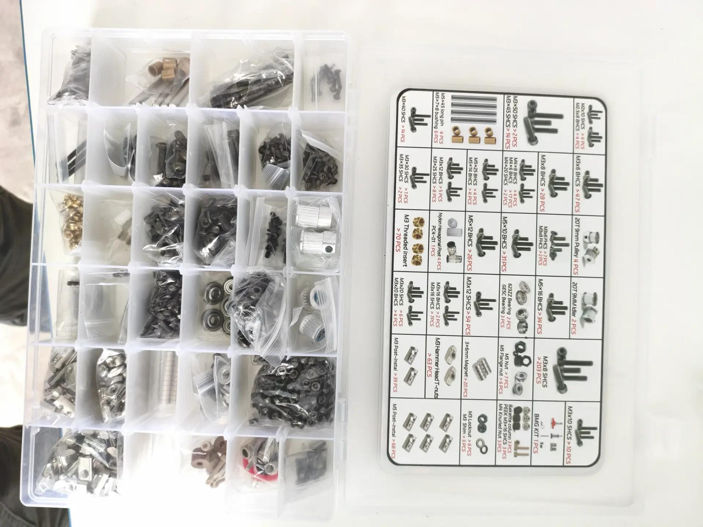

Состояние по журналу: 14 ноября 2026350 AWD · сопровождение сборки
Сборка · настройка · первая печать
Рабочая панель проекта
Здесь собраны текущий этап, ближайшее безопасное действие, инструкция и файлы. Статус меняется только по наблюдаемому подтверждению.
Обновлено 14.11.2026
Экземпляр в работе
От разобранного комплекта — к повторяемой печати
Проходим путь по этапам и фиксируем, что подтверждено именно на этом принтере. Пока идентификация комплекта и ревизии не закрыта, электрические работы и включение остаются заблокированы.
Модель: Trident 350 AWDКонтроллер: пока не подтверждёнПитание: не включать
Сейчас · этап C
Каркас собирается
Так записано в журнале сборки. В карте состояния остаются незаполненные сведения о ревизии и компонентах — перед следующими контрольными воротами сверим записи.
Ближайшее действие
Один шаг, затем контроль результата
C
Продолжайте сборку каркаса по руководству
Оставьте болтовые соединения без окончательной затяжки, пока не собран и не проверен весь каркас.
На этой точкеНе переходите к электрике. После сборки каркаса потребуется проверить геометрию, затем протянуть соединения и зафиксировать результат.
Записанная контрольная точка
Каркас · в работе
Фото пока подтверждает только органайзер крепежа и маркировочную карту. Комплектность крепежа по одному фото не подтверждена.
Модель / ревизияНужна сверка
Питание и проводкаНе проверены
Маршрут проекта
Переходы только после закрытия критериев
A · HOLDИдентификацияМодель, ревизия, комплектность
B · далееРабочее местоИнструмент, порядок, документы
C · В РАБОТЕМеханикаКаркас и геометрия
D–E · ЗАКРЫТОЭлектрика и запускПосле проверки схемы и проводки
F–J · ПОЗЖЕKlipper → печатьНастройка, слайсер, тест
Инструкция загружается только после нажатия кнопки.
R3
Иллюстрированная инструкция
Показать 205 страниц в окне сайта или открыть локальный PDF-файл.
Статус источникаВ реестре проекта указано, что приложенный PDF R2 — вспомогательная копия; при сборке применяйте актуальную инструкцию производителя June kit и проверьте ревизию своего набора.
История и подтверждения
Файлы и журнал
Ключевая информация представлена здесь в читаемом виде, без переходов на страницы с YAML и Markdown-текстом.
Подтверждает вид маркировочной карты и органайзера. Не подтверждает фактическое количество каждого крепежа или комплектность.

Последняя запись
Журнал сборки · 14 ноября 2026
Сборка каркаса в работе
Болты пока не затягивать окончательно. После завершения каркаса проверить геометрию рамы и протянуть соединения после выверки. PASS не выставлен.
Фото подтверждает только органайзер крепежа и его маркировочную карту. Количество и комплектность деталей требуют отдельной сверки.
Состояние экземпляра · 14 ноября 2026
Карта состояния
Сводка открыта как обычная страница: здесь нет сырого YAML-текста.
ОСТАЮТСЯ ОТКРЫТЫЕ HOLD
Сборка каркаса отмечена в журнале как выполняющаяся. Идентификация комплекта и ревизии остаётся незакрытой; переход к электрике и подача питания пока не разрешены.
Физический этап · журнал от 14.11
Каркас
В работе · болты пока не затягивать окончательно
Следующий gate: завершить каркас, выверить геометрию и только затем протянуть соединения.
Комплект
Идентификация
Точная ревизия не зафиксирована
Сверить ярлыки и маркировки комплекта с руководством и BOM.
Питание
Первое включение
HOLD · не включать
До сверки схемы точной ревизии с платами, БП и реальной проводкой.
Не подтверждено на этом экземпляре
Не выбирать конфигурацию по догадке
Электроника и датчики
Контроллер и тип драйверов XY/Z
Хост SBC и фактическая прошивка
Хотэнд, термистор и сопло
Датчик стола / Cartographer и его режим
Конфигурация и печать
Рабочий `printer.cfg` и CAN UUID каждого устройства
Поверхность и безопасная область печати AWD
OrcaSlicer пока не установлен/не подключён
Проверенных профилей материала пока нет
Открытые ограничения безопасности
Не подавать сетевое питание до проверки проводки по официальной схеме своей ревизии.
Не выполнять homing XY, пока направление не проверено коротким безопасным движением.
Не копировать `printer.cfg` или UUID с другой машины.
При расхождении маркировки, схемы, фото или конфигурации остановить зависимый шаг.